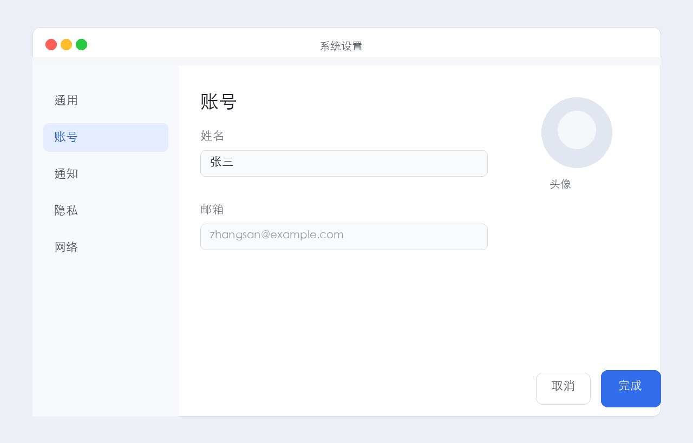

📸
clickscribe
在 macOS 上点几下鼠标，自动生成操作步骤文档。
开源、本地、免费 —— Scribe / Folge 的轻量替代品。
⭐ GitHub
查看效果 ↓
开源、本地、免费 —— Scribe / Folge 的轻量替代品。

下面是一份 clickscribe 真实导出的操作指南。注意每一步点击位置的 橙色脉冲圈 + 鼠标光标动效 —— 不是写死在图片里，而是 CSS 动画叠加在干净原图上。
↑ 这是真实的导出 HTML，点开 在新标签打开 看更清晰
把「录制软件操作 → 写教程/SOP/文档」这件事从几小时压缩到几分钟。
基于 macOS CGEventTap，每点一次鼠标自动截一张超清 retina 截图，无需手动。
点击位置标注鼠标光标 + 呼吸脉冲圈（深橙线/浅橙填充/灰橙小圈），导出 HTML 是动态的。
一次把所有截图发给 AI，理解整个流程后为每步生成连贯中文说明。支持 GLM 直连 / 自定义 API。
保留 retina 原画质，编辑器一键切换「全屏 / 聚焦裁切」视图，看清细节。
浏览器里改标题/说明、多选/全选、批量删除、上下排序、一键清空 AI 说明。
HTML（内嵌动效）、Markdown（含图片）、JSON。一份操作指南随时分享。
截图、会话、配置都在本机，不上云。AI 可走你自己的 key，零费用、零外泄。
build_app.sh 生成「步骤记录.app」，桌面双击即用，无需开终端。
AI 生成的步骤说明会结合整个流程的上下文，每一步都交代清楚「这步做了什么」。

git clone https://github.com/CGIFM/clickscribe.gitcd clickscribe && ./run.shhttp://127.0.0.1:5577，点「开始录制」，然后去你要记录的软件里正常操作 —— 每点一次鼠标，clickscribe 自动截一张图。完成回网页点「停止录制」。想做成桌面 App 双击启动？bash build_app.sh 搞定。